Summary
This article outlines the process of adding Active Directory Federation Services (AD FS) to SbPAM as an Authentication Connector via OpenID Connect (OIDC). The article is split into two sections, Steps for AD FS and Steps for SbPAM. The AD FS section must be completed first.
Instructions
Steps for Active Directory Federation Services (AD FS)
- Launch AD FS Management on the AD FS server:
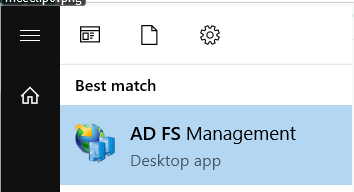
- Right-click on Application Groups and select Add Application Group…
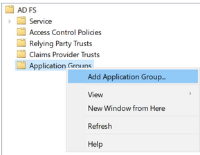
- Select Native application accessing a web API and enter "SbPAM (OIDC)" as the Name, then click Next.
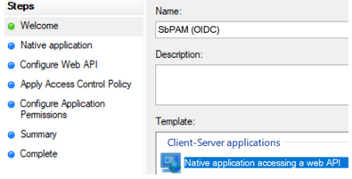
- Copy the Client Identifier value; you will need that when configuring SbPAM.
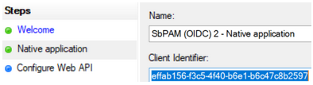 - For the Redirect URI, use the SbPAM server's URL followed by "/callback". For example: https://<sbpam-server>:6500/callback. Click Add, then Next.
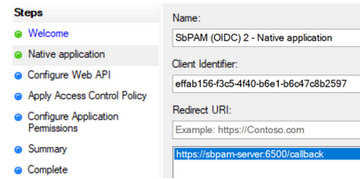
- For the Identifier of the Web API, use the SbPAM server's URL. Click Add, then click Next.
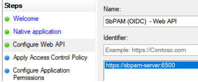
- For Apply Access Control Policy, leave all defaults and then click Next.
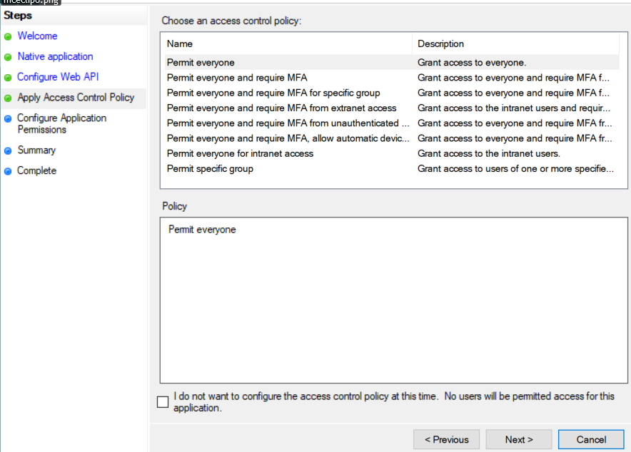
- For Configure Application Permissions, enable the following and then click Next.
• allatclaims
• openid
• profile
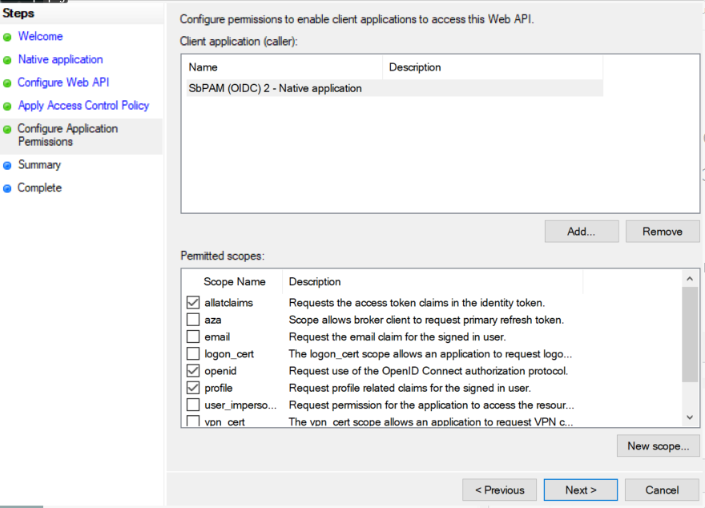
- Review the Summary, then click Finish.
- Double-click on the newly created Application Group, then double-click on the Web API application, then navigate to the Issuance Transform Rules tab. Click Add Rule...
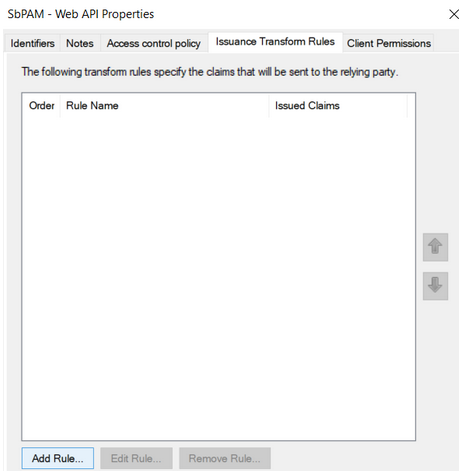
- From the dropdown, select Send Claims Using a Custom Rule and click Next.
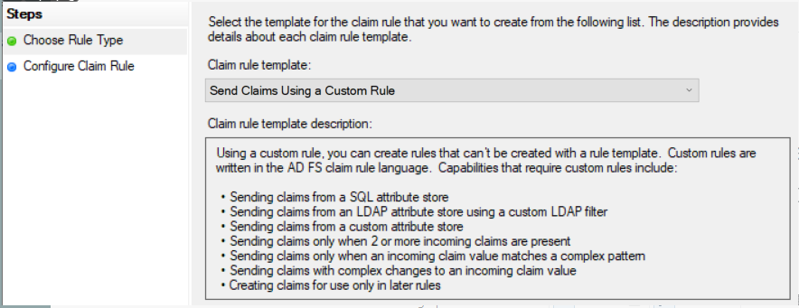
- Name the rule "Send attributes", and add the following custom rule:
x:[] => issue(claim = x);
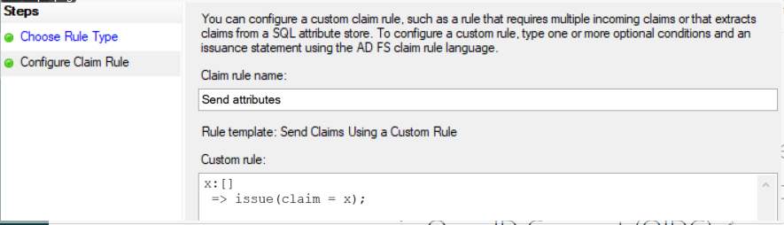
Click Finish, Apply, OK, then OK again. You can now close AD FS.
- Open PowerShell as an administrator, and run the following commands to enable CORS for communication between the SbPAM server and AD FS:
Before running the commands, you should make sure you capture any existing CORS settings since the Set-AdfsResponseHeaders command will replace the existing values with the provided value.
Set-AdfsResponseHeaders -EnableCORS $true Set-AdfsResponseHeaders -CORSTrustedOrigins https://<sbpam-server>:6500
- This completes the AD FS configuration portion of the guide.
Steps for SbPAM
Once the Steps for AD FS have been completed, take the following steps in SbPAM to add AD FS as an Authentication Connector via OIDC.
- As an SbPAM Admin, navigate in SbPAM to Configuration > Authentication, and click the green "+" button to add a new Authentication Connector.
- Give the new connector a name, description (optional), and a Connector Type of "OpenID Connect".
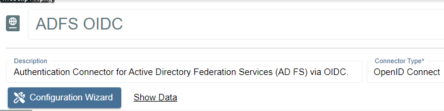
- Click on Configuration Wizard.
- On the wizard's Configure Client page, enter the following values:
Issue URI: https://<adfs-server>.domain.com/adfs
Client Id: The Client ID noted in the previous steps for AD FS.
Callback Address: https://<sbpam-server>:6500/callback
CORS: https://<sbpam-server>:6500
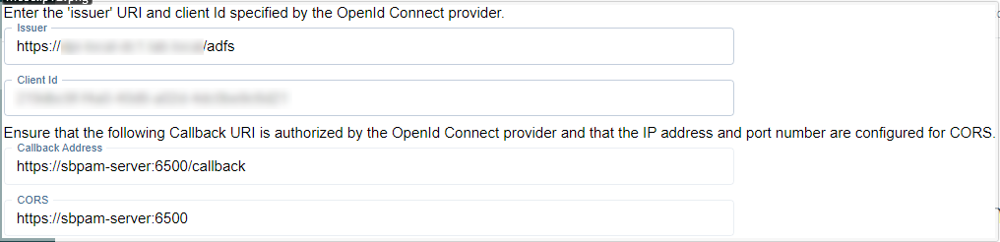
- Click Test Connection. If brought to a log-in page, click Back in your web browser and then Next in the SbPAM wizard. If the page refreshes and brings you back to the SbPAM wizard, you should also click Next to proceed.
- On the Test Login page, click Login. You'll be brought to an AD FS log-in page. Log-in with Active Directory credentials, and you'll be brought back to the same page of the SbPAM wizard. Click Next.
- Click Get User Data. Locate a mapping you would like to use when users sign-in to SbPAM using AD FS, such as an email address or UPN.
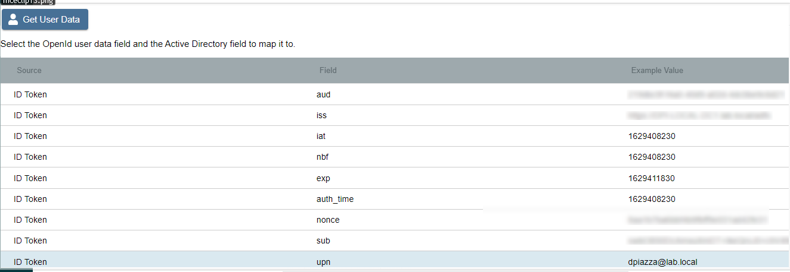
Click on the mapping, click Select, select the matching Active Directory mapping from the displayed dropdown, then click Finish.
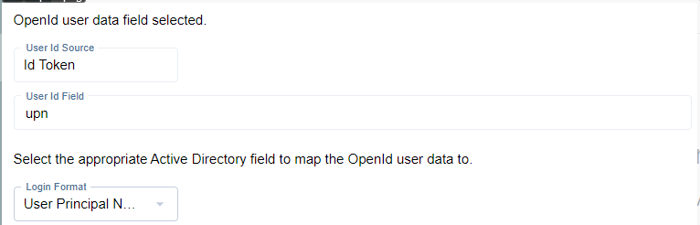 - The last step is to navigate to specific users in SbPAM's Users & Groups menu, and assign the AD FS OIDC authenticator.
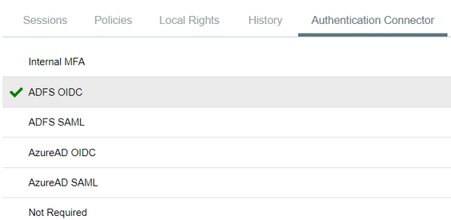
When using the OIDC log-in option, the user will be redirected to log-in to AD FS. Upon successful authentication, the user will be redirected to the SbPAM UI as their now logged-in user.